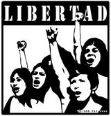

Ética y libertad del software libre
Hoy se realiza FLISOL en varios puntos de Chile. Me gusta esta actividad, y me parece que encarna el espíritu social que debe importar en el desarrollo de la computación.
Yo uso software libre, y software open source desde hace años, recientemente implantamos un servicio de misión crítica en mi trabajo usando sólo productos opensource.
No tengo empacho en usar software abierto, y tampoco en usar software propietario (o privativo, como debería decirse para ser gramaticalmente correcto).
Lo que me molesta en estos eventos es cuando se nos trata de vender una idea incorrecta, la idea de que usar el software libre es algo ético, mientras que usar el software cerrado (propietario o privativo) no. Algo que por supuesto es falso, y es parte de una cierta ideología, capciosa, que no tiene que ver con la naturaleza del software. No es la tecnología la llamada a ser ética, es la gente la que debe serlo, pero no quedas manchado por usar software privado. Creo que e
sa es una visión odiosa, y que deberíamos desterrarla de las discusiones.
El software abierto tiene muchos méritos, pero la ética, no es uno de esos. Y para explicar mi punto adjunto un extracto reciclado y mejorado que escribí febrero de 2006:
Libertad
¿Sómos libres los hombres?
Esta pregunta es importante, porque define los límites de la ética. Aristóteles se lo pregunta, y dice que somos libres hasta por ahí no más. Algunos más severos, como Spinoza plantean que cómo somos parte de la esencia de Dios la libertad está en asumir su voluntad, o sea que en el fondo no podemos ser libres en el sentido vulgar del término.
Yo creo que somos libres, por que podemos elegir. Sin embargo una cosa es lo que quiero, y otra cosa lo que puedo. Una cosa es lo que elijo, y otra cosa es lo que me pasa.
En palabras de mi hermano Ricardo:
…la libertad en el terreno cotidiano no puede ser

absoluta. Cada vez que decido hacer algo, “tomar helado”, dejo de elegir o de hacer otras cosas, por ejemplo “dejar de tomar té”. Alguien listo podría decirme “pero puedes tomar té con helado”. Cierto pero esa ya es una tercera opción que excluye el simple he
cho de tomar sólo helado. Cada acto libre, excluye en su realización otros actos libres.
No somos libres, así con libertad absoluta, porque no somos seres absolutos. Y el sostener la libertad absoluta es una opción que bien puede caer en el plano ideal, pero no vivencial.
Soy libre de ir a la velocidad que quiera por la carretera, o de trasnochar y conducir no atento a las condiciones del camino, pero eso me va a provocar consecuencias, como me pasó.
Es cierto, no hay libertad absoluta, porque no somos abso
lutos. Si lo fueramos seríamos dioses y podríamos controlar el mundo a nuestro arbitrio.
Pero, que aburrido sería eso, ¿no creen?
Somos libres, pero tenemos límites, que son externos a nosotros. Puedo elegir leer el post de Ricardo, y una vez leido puedo elegir contestarle.
Cuando uno elige debe afrontar las consecuencias de esa decisión.
Y es que la libertad viene con una mochila, que se llama RESPONSABILIDAD.
Libertad y Software
Toda licencia de software pone un marco de uso del mismo. Por ejemplo, este sitio está bajo una licencia Creative Commons de atribución, que dice que puedes distribuir este contenido, puedes incluso crear trabajos derivativos y ganar dinero con lo que yo escribo, pero debes atribuirme la autoría de los textos originales.
Lo mismo pasa con el software, uno puede ponerle la licencia que quiera. Apple limita el uso de mucho de su software, no pudiendo aplicarse en medicina o tecnología militar. Incluso actulamente impone restricciones en el software que puede operar en su hardware, como el proceso de certificación previa de las aplicaciones para el iPhone, pudiendo vetar el desarrollo de aplicaciones para sus equipos. Hay otros casos, como no permitir que su software se use para controlar plantas nucleares.
Un desarrrollador tiene el derecho de dejar plasmada su visión ética en la licenc
ia del software que crea. Si a un programador le parece mal que su software sea usado en pornografía, o para promover el odio entre razas, entonces debe buscar una licencia que prohiba eso.
La licencia GPL original se basa en ciertos principios plasmados en la idea de Software Libre de Richard Stallman.
- La libertad de usar el programa, con cualquier propósito (libertad 0).
- La libertad de estudiar cómo funciona el programa, y adaptarlo a tus necesidades (libertad 1). El acceso al código fuente es una condición previa para esto.
- La libertad de distribuir copias, con lo que puedes ayudar a tu vecino (libertad 2).
- La libertad de mejorar el programa y hacer públicas las mejoras a los demás, de modo que toda la comunidad se beneficie. (libertad 3). El acceso al código fuente es un requisito previo para esto.
Según esta filosofía, uno puede construir software para controlar misiles balísticos intercontinentales de destrucción masiva siempre que el programa sea estudiable, es decir, su código fuente debe ser accesible (incluso para el enemigo ;).
Uno diría que los militares no harían eso nunca, pero la libertad 0 no lo impide. Es más, hay software GPL para la industria militar, RedHawk Linux es el ejemplo más impactante, que es usado en el desarrollo de aviones de combate, e incluso la NSA ha desarrollado una versión de linux adaptada a las necesidades de seguridad de los Estados Unidos.
A mi no me gusta que Linux se use para eso. De hecho es ridículo discutir sobre si el software GPL debe restringir el uso de DRM, cuando es éticamente más cuestionable que el software libre sea usado para desarrollar bombarderos que matarán a miles de niños.
A mi no me gusta que Linux se use para eso. De hecho es ridículo discutir sobre si el software GPL debe restringir el uso de DRM, cuando es éticamente más cuestionable que el software libre sea usado para desarrollar bombarderos que matarán a miles de niños.
Parece ser que en el GPL el otro aspecto de la libertad, la responsabilidad no se cuestiona, es decir, no define un marco ético, que es un marco de cómo uso la libertad.
Aunque Stallman trata de vender la idea de que todo esto es algo ético, y bueno para la sociedad, la verdad es que usa argumentos dualistas trasnochados, llevando a sus interlocutores a confundir ética con moral, con “cierta moral”, con un discurso que plantea falsos dilemas, es un maniqueo, que sostiene que el que desarrolla software prropietario es un tipo malo, que sólo trata de perjudicar deliberadamente a la sociedad, un mensaje que prende muy fuerte en la juventud, pero que no tiene mucha sustancia en realidad, y que de ética tiene muy poco, como decía Nietzche, “sólo es un sonido, no la verdad”.
El GPL busca libertad absoluta para el software, pero no le impone ningún tipo de responsabilidad ética, salvo quizás, la de que debes compartir tu código fuente con tu prójimo.
Así que lo correcto es decir que el software libre es una ideología, y no una ética. Si hubiera ética en el free software, se definirían las responsabilidades que conllevan seguir esta filosofía.
Que sea una ideología no tiene nada de malo. Lo malo es que quieran venderla como la única forma ética de desarrollar software, o que nos quieran hacer creer que es la única visión ética, y correcta, para guiar la profesión de desarrollar software.